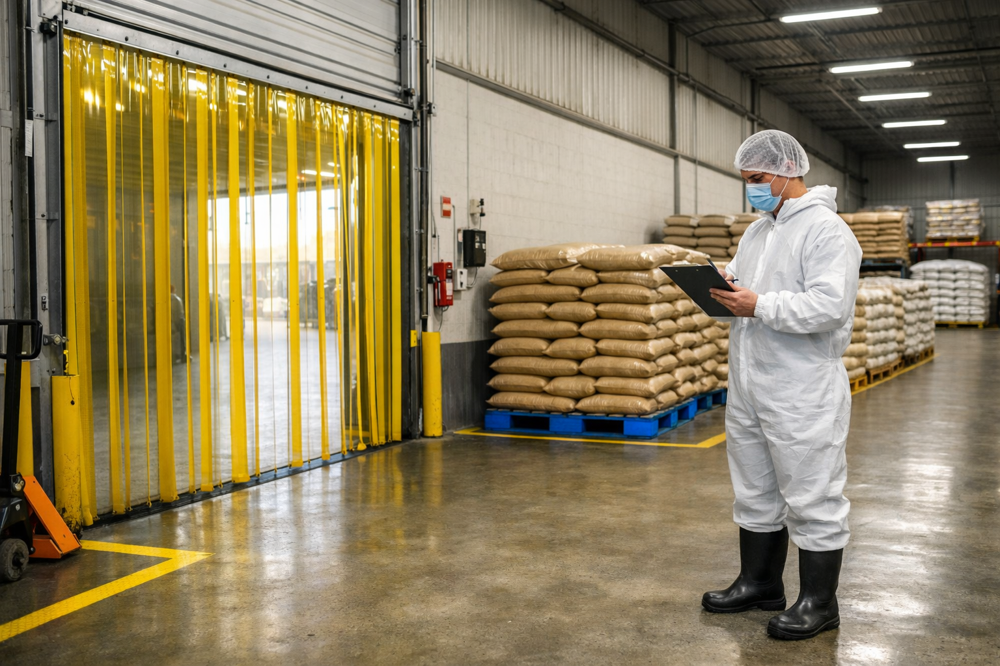

Estación de Inspección
Examen Activo

Haz clic sobre las áreas de la imagen donde identifiques anomalías o fallas directas contra la norma BPFA.
📋 Criterio de Estación
Analiza detenidamente el entorno visual. Si consideras que esta zona de la bodega cumple por completo con el orden, higiene y especificaciones normativas, presiona el botón de conformidad.
🔍 Hallazgos Detectados 0 hallazgos
No has marcado ninguna falla en la imagen todavía.
Si la escena posee fallas, haz clic directo en ellas para argumentar.